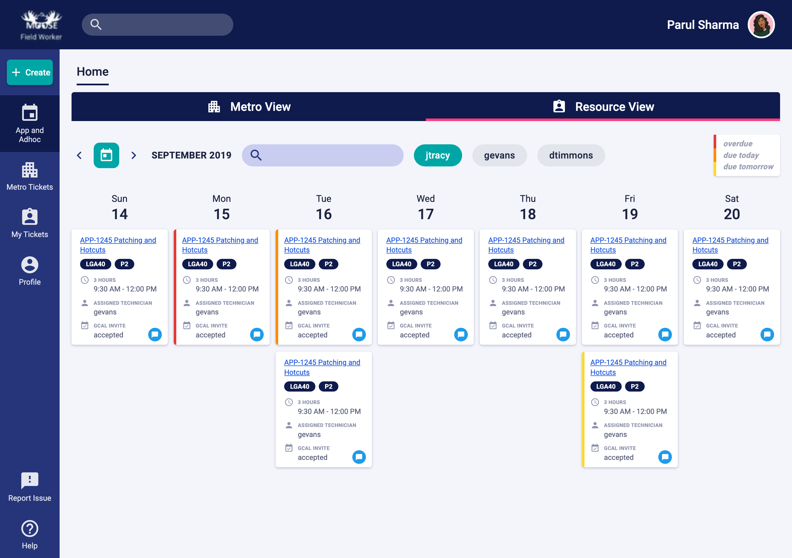
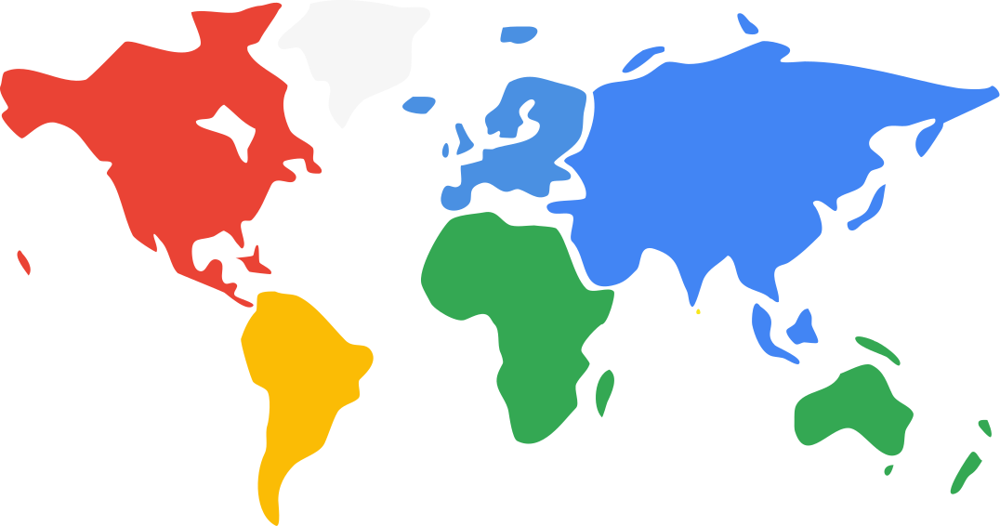
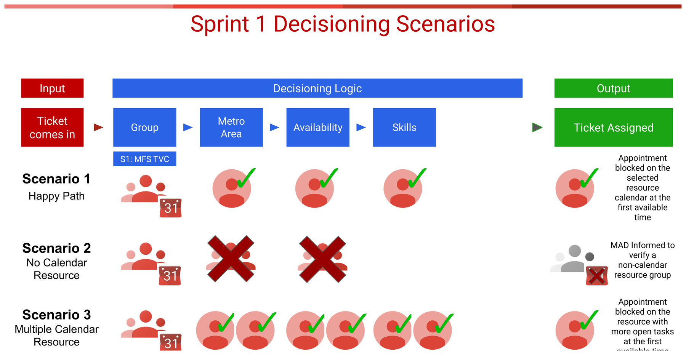
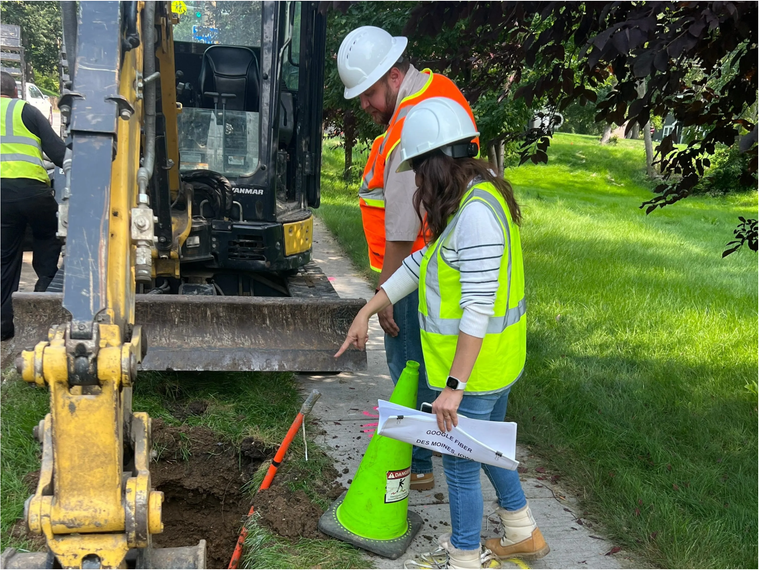
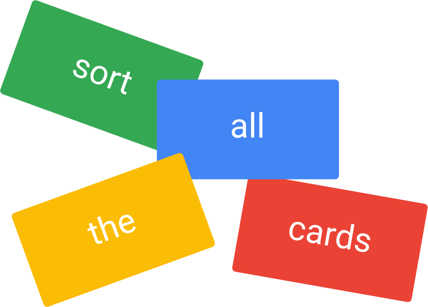
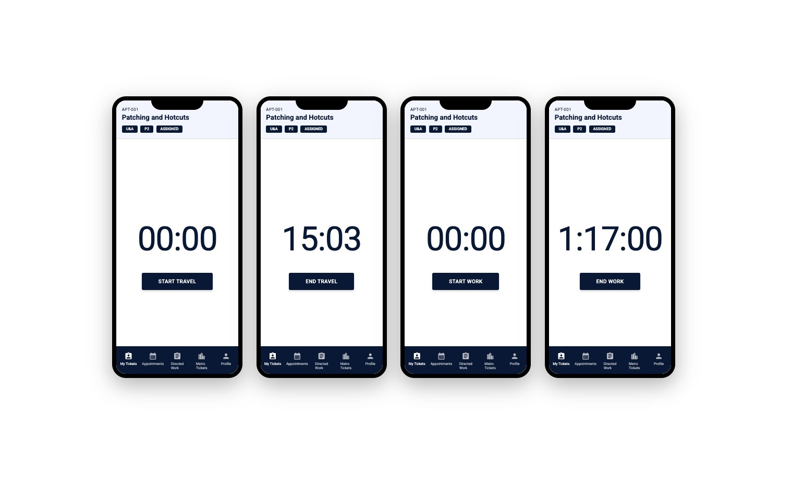

Automating field dispatch at scale

A dispatch console that routes field work across global metros, paired with the mobile app field workers carry on site. It made automation possible across 10 workstreams, 4 timezones, and 3 user groups, a 30% productivity gain. The work also informed the product roadmap and contributed to a client contract renewal.
- 30% Faster ticket assignment
- 3 → 1 Clicks to the work log
- +3.5 pt User satisfaction (1–5 scale)
The Brief
“How might we automate the assignment of field workers to tickets at scale, across regions, in real time?”
Three user groups, one workflow: field workers on site, regional owners managing metros, and dispatch agents routing work remotely across timezones.

Approach
Design the process before the pixels
You can't automate a workflow you haven't defined. Before any UI, I mapped the decisioning logic (how a ticket gets grouped, matched to a metro, checked for availability and skills, and assigned) and pressure-tested it against the messy real-world scenarios (no calendar resource, multiple resources, overtime).

Research
Field workers don't work at a desk
I shadowed a field worker for a day and visited a live POP site. The context changed the product: limited WiFi, on ladders, laptop left in the truck. So I pushed back on the desktop-first default and argued for a mobile-first field app.



Field App
Designing automation people trust
The first version tracked travel and work with live timers. However, interviews I did and surveys I conducted with field workers revealed the feedback that they wanted the timer removed. I investigated further.
We’d like a pause work button
why
feels like we are being micromanaged
why
having a ticking timer recording you to the second feels stressful and unfair
why
We don’t always work on one ticket at a time. Sometimes, since I have the tools out already I’ll do part of another job and then come back to the other one
I reframed the design around autonomy: a pause control, looser tracking, and a phased automation model (rule-based first, then data-informed) that kept a human in the loop. The shift showed up in how people talked about it.
“Instead of being watched, I feel like I get to help make it better.” Field worker, usability testing
Dispatch Agent App
From invisible to at-a-glance
Dispatch agents work remotely in a different timezone from the job, and they must action a ticket in under six minutes. From a heuristic evaluation with 10 agents across Manila, Frankfurt, and London, one pattern dominated: the work log they relied on was buried three clicks deep, at the bottom of a long scroll.
I designed a slide-out work log pinned to the right at full height. The underlying platform had no slide-out pane component, so I partnered with engineering to build a custom one.
Result: three clicks to one, no more scrolling, ticket-assignment time down 30%, and a +2.5-point satisfaction lift for dispatch agents.
Impact